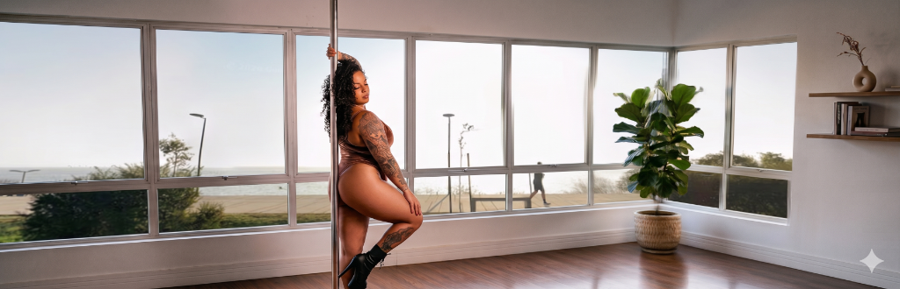

Estúdio de Pole Dance Zona Sul • Porto Alegre
Um grupo restrito com acesso prioritário à nova unidade e acompanhamento ultra-personalizado diretamente comigo antes da abertura oficial.
Aplicar como FundadoraUma nova unidade. Um novo formato.
Ao longo dos últimos 10 anos, personalizei minha metodologia e transformei o pole em algo muito maior do que a técnica física. O movimento é expressão, é força e é acolhimento. A unidade Zona Sul chega para oferecer um espaço reservado a mulheres que buscam intimidade e refinamento técnico. Aqui, tu não precisas de pressa, de comparação ou de "saber fazer". Respeitamos o teu tempo para que tu possas viver a tua melhor fase.
A Linha do Movimento
No estúdio Zona Sul, o pole é ensinado através de diferentes linguagens para se alinhar ao teu momento e objetivo pessoal.
Força, acrobacias aéreas desafiadoras na barra vertical, flexibilidade e superação de limites físicos.
A união da força do esporte com a fluidez da dança. Ritmo, transições de solo e expressão artística.
O efeito dinâmico e mágico de voar. Técnicas de controle centrífugo e rotação contínua da barra.
Para quem nunca tocou no pole. Aprendizado seguro focado na biomecânica das pegadas e giros iniciais.
Vagas Limitadas
O Grupo Fundadoras foi desenhado exclusivamente para as mulheres que desejam moldar a história da Zona Sul conosco desde o primeiro dia. Como o nosso formato prioriza o rigor técnico, privacidade extrema e turmas reduzidas, o acesso a esta primeira fase é limitado e concedido mediante triagem pessoal.
Condições Reservadas de Lançamento
Acesso prioritário aos planos e formatos exclusivos da inauguração, apresentados de forma privada durante a triagem.
Prioridade Absoluta de Horários
Escolha prioritária na grade horária semanal para acomodar o teu treino perfeitamente à tua agenda.
Inauguração Exclusiva
Convite de honra para o coquetel intimista e fechado de inauguração da nova casa.
Kit Personalizado
Um presente exclusivo desenvolvido especialmente para as nossas primeiras parceiras de jornada.
A Experiência Premium
01
Acompanhamento Individualizado
Aulas planejadas especificamente para os teus objetivos, respeitando a tua segurança anatômica e acelerando a tua evolução física e artística.
02
Turmas Reduzidas
Esqueça ambientes cheios. Treine em um espaço reservado, com poucas alunas por horário, focado em privacidade e excelência.
03
Biomecânica Aplicada
A força das acrobacias aliada ao estudo do movimento humano. Um método seguro que previne lesões e potencializa a tua mobilidade.
04
Experiência Completa
Um ecossistema premium criado diretamente por mim. Do primeiro toque na barra vertical ao desenvolvimento da tua coreografia final.
Formatos Personalizados
Disponibilizamos planos com diferentes frequências semanais para se adaptarem à tua vida.
Por ser um estúdio com foco em alta personalização e turmas intencionalmente reduzidas, nós não trabalhamos com pacotes padronizados ou matrículas automáticas. Cada formato de participação é apresentado de maneira individualizada durante a nossa conversa de triagem. Assim, garantimos que tu recebas o acompanhamento exato que o teu corpo precisa.
Durante esta fase de lançamento, as participantes admitidas no Grupo Fundadoras garantem as condições especiais de fundação de forma vitalícia enquanto mantiverem seus planos ativos.
Nova Fase
As vagas para o Grupo Fundadoras são estritamente limitadas para garantir o rigor técnico e o conforto de cada atendimento. Entre em contato e agende a tua conversa de triagem.
Quero Assegurar Meu Espaço no GrupoClique para abrir nosso canal de atendimento exclusivo e iniciar a tua triagem.